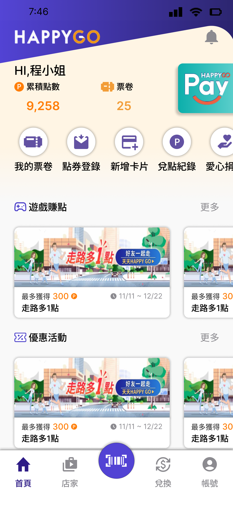
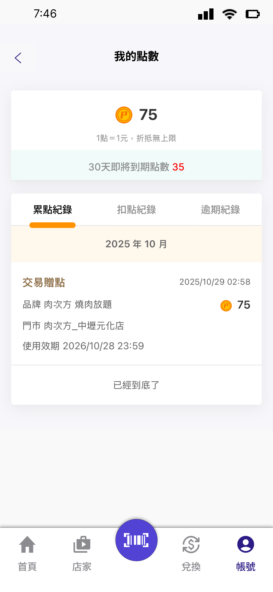
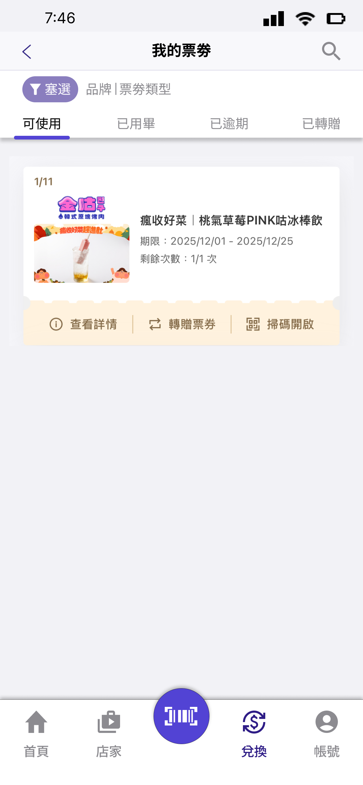
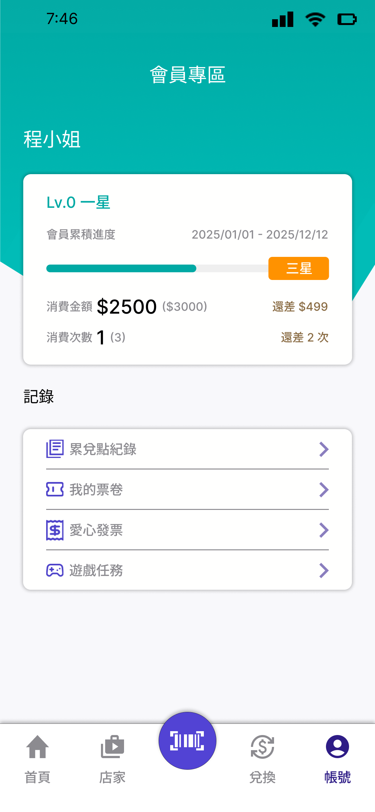
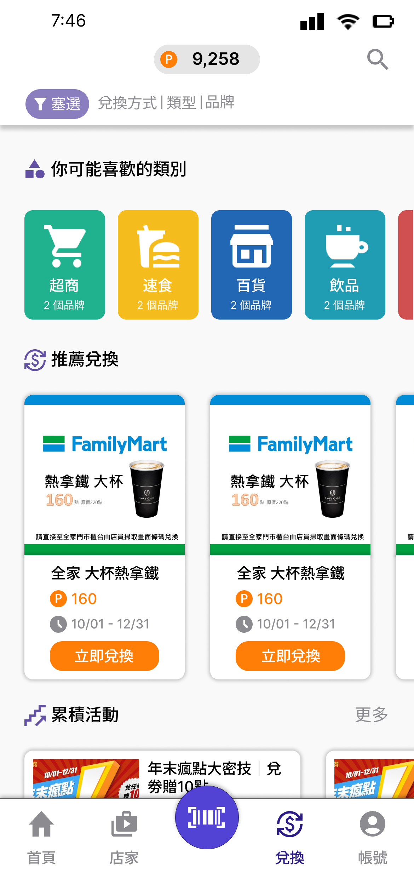
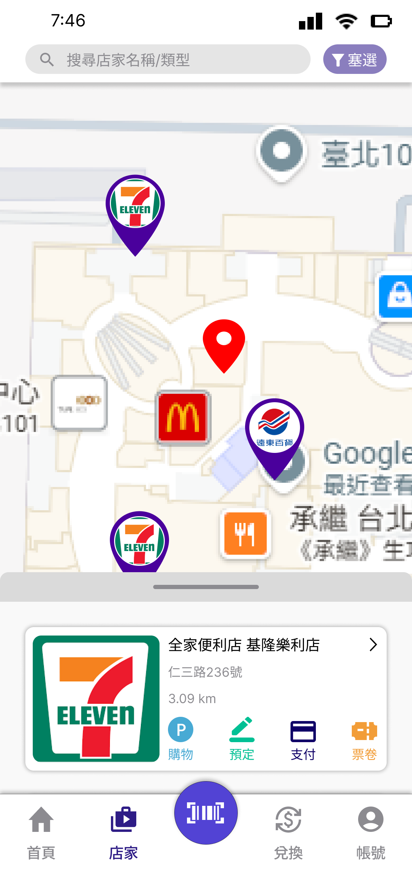
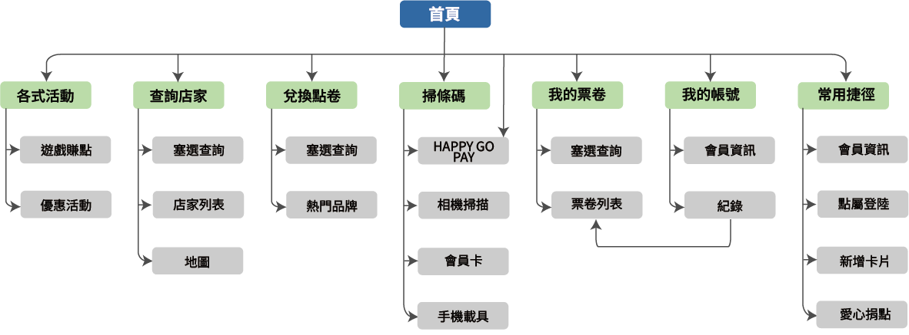
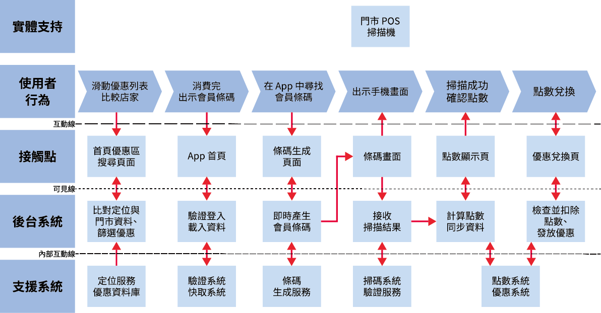

消費紀錄、點數與條碼分布在不同入口，使用者需要多次尋找。
UI/UX Case Study
HAPPY GO App 優化設計
本專案以「提升使用者消費體驗」為核心，透過系統化的介面重新排版，重點解決首頁資訊過載與功能路徑不明的問題，並藉由整合查詢按鈕、強化條碼放大與優化點數兌換流程，打造一個操作更為直覺、視覺美感與功能性兼具的點數管理工具。






整合查詢按鈕與常用任務，降低來回切換頁面的操作成本。
Problem
查詢路徑分散
消費紀錄、點數與條碼分布在不同入口，使用者需要多次尋找。

Goal
集中查詢入口
整合查詢按鈕與常用任務，降低來回切換頁面的操作成本。
Overview
設計介紹
HAPPY GO App 乘載會員點數、消費查詢、條碼掃描、兌換活動與合作通路等多種任務，但原本介面容易讓使用者在首頁停留過久，難以快速判斷「現在能做什麼」。本設計模板可延伸放入研究資料、使用者旅程、改版前後比較與測試結果。
- 服務頁面功能不明，替換成(點數兌換)改變流程。
- 首頁重新排版，減少廣告與非必要功能佔比。
- 附近店家頁面重新排版，集中功能減少頁面。
- 查詢與分類整合成一按鈕。
- 條碼頁面新增放大功能。
- 帳號會員頁面將會員等級顯示前移改變流程。
- 其餘頁面美術調整。
Prototype
Figma展示
Information Architecture
資訊架構圖

Service Blueprint
服務藍圖

Design System
Design System